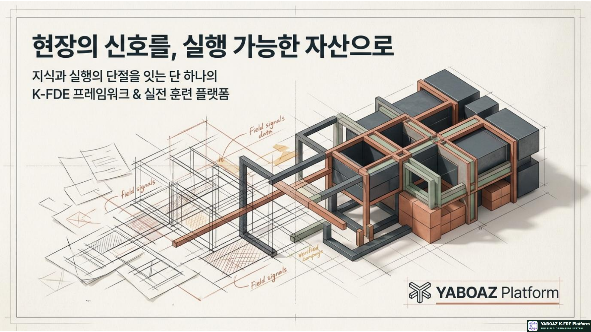
현장의 신호를 실행가능한 자산으로 참고 슬라이드 01 1. YABOAZ의 핵심 정의 YABOAZ는 단순한 AI 도구나 업무관리 시스템이 아닙니다. 현장 문제 발견, 지식과 데이터 구조화, AI 기반 실행, 검증 결과의 자산화를 하나의 운영 흐름으로 연결합니다.
현장의 신호 → 증거와 문제 → 온톨로지 구조화 → AI 판단 → 인간 검토 → 실행 → KPI 검증 → 조직 자산화
YABOAZ는 FDE가 현장 문제를 발견하고, AI 실행 구조를 설계하고, 실제 성과를 검증하며, 해결 경험을 조직의 자산으로 축적하는 실행 운영체계입니다. Discover 현장 신호와 반복 문제를 발견합니다.
Structure 신호를 온톨로지와 업무 구조로 바꿉니다.
Execute AI와 사람이 승인·실행·기록을 수행합니다.
Assetize 검증된 해결책을 재사용 자산으로 남깁니다.
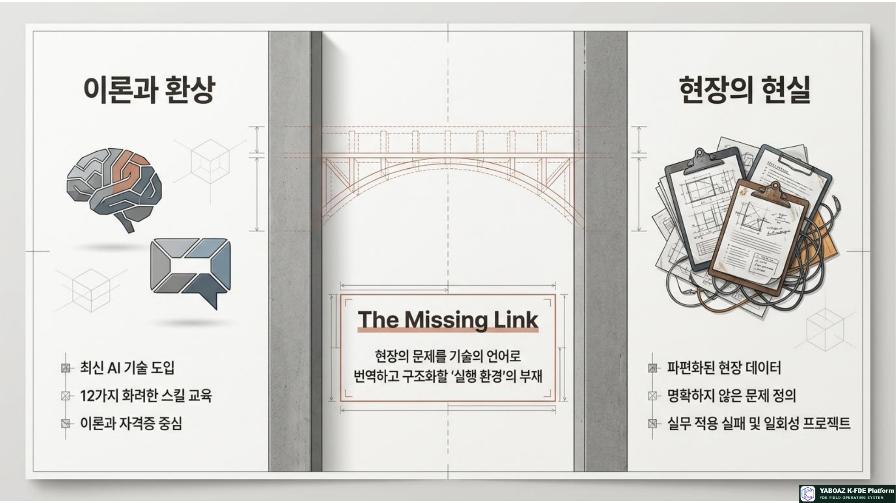
현장의 신호를 실행가능한 자산으로 참고 슬라이드 02 2. YABOAZ가 아닌 것과 YABOAZ인 것 단순한 AI 교육 플랫폼이 아닙니다 AI 기능을 소개하는 데 그치지 않고 현장 문제를 해결하고 실행 결과를 검증합니다.
단순한 FDE 훈련장이 아닙니다 교육생이 과제를 수행하고 MVP와 KPI를 통해 결과를 자산으로 남깁니다.
단순한 컨설팅 도구가 아닙니다 보고서와 전략을 넘어 온톨로지, Agent, 워크플로를 실제로 구현합니다.
단순한 SaaS 제품이 아닙니다 현장 문제를 발견한 뒤 반복 가능한 기능과 자산으로 발전시킵니다.
YABOAZ의 정체성 현장 문제를 실행 가능한 구조로 바꾸고, 작은 실행을 검증하며, 검증된 결과를 다음 프로젝트의 시작점으로 만드는 K-FDE Field Operating System입니다.
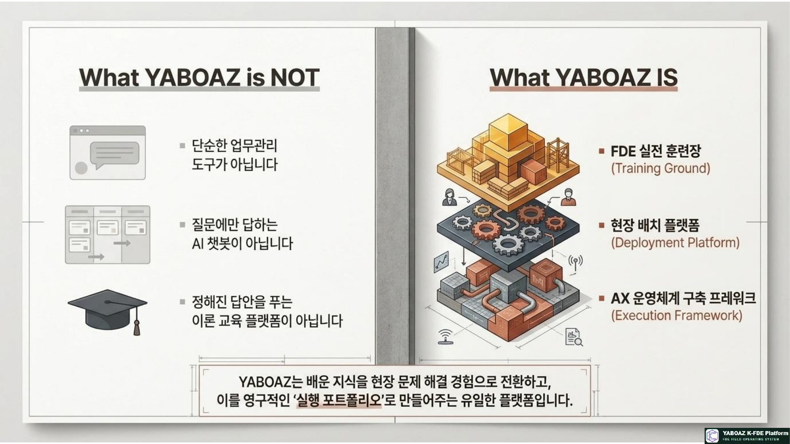
현장의 신호를 실행가능한 자산으로 참고 슬라이드 03 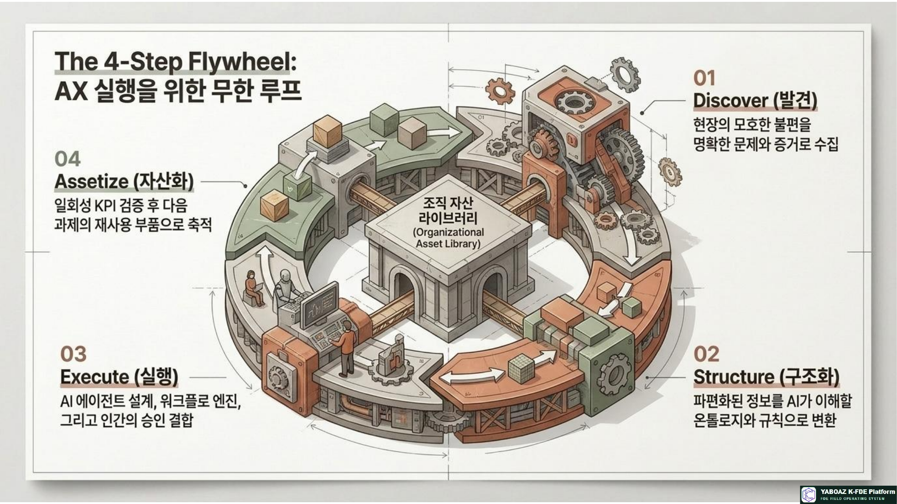
현장의 신호를 실행가능한 자산으로 참고 슬라이드 04 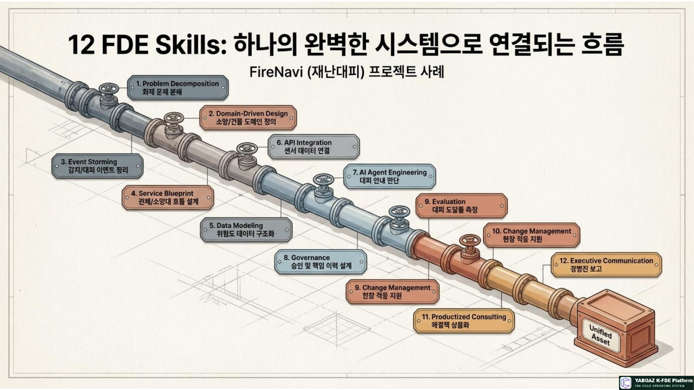
현장의 신호를 실행가능한 자산으로 참고 슬라이드 05 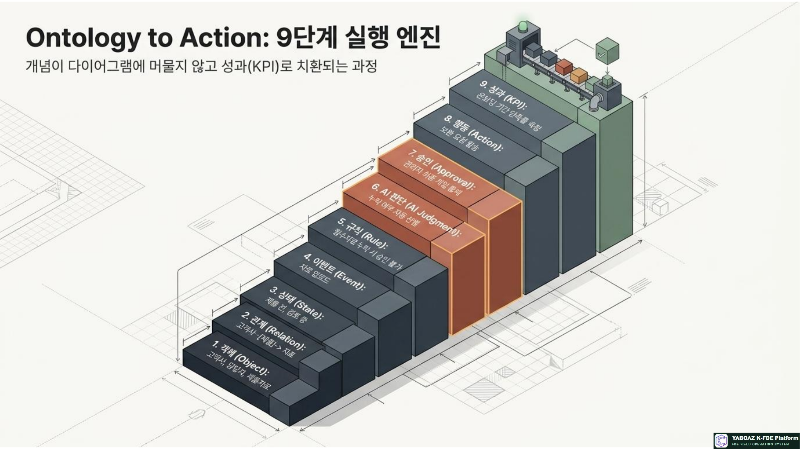
현장의 신호를 실행가능한 자산으로 참고 슬라이드 06 3. YABOAZ의 4단계 플라이휠 01 Discover · 현장 신호 발견 현장 관찰, 사용자 인터뷰, 업무 문서, 시스템 로그, 회의 기록, 담당자 경험, 반복 오류, 고객 불만, 지연과 병목을 수집합니다. 실제로 어떤 문제가 발생하고 누가 영향을 받으며 무엇이 반복적으로 실패하는지 확인합니다.
02 Structure · 실행 구조화 발견한 신호를 객체·속성·관계·상태·이벤트·규칙·행동으로 구조화합니다. 데이터 출처, 권한, 책임까지 연결해 AI가 업무 맥락을 이해할 수 있는 온톨로지를 만듭니다.
물류 예시 주문·상품·창고·차량·기사·고객을 객체로 정의하고, 접수·피킹·출고·배송·완료·지연의 상태와 재고부족·배송지연 이벤트를 연결합니다.
03 Execute · AI와 사람의 협업 실행 AI Agent, 판단 시나리오, 워크플로, 인간 승인, 업무 화면, 데이터 연결, 바이브코딩 기반 MVP, 실행 기록과 예외 처리를 결합합니다.
AI가 분석하고 추천한다.
04 Assetize · 검증 결과의 자산화 질문 세트, 온톨로지 모델, Agent 사양, 의사결정 규칙, 워크플로, 화면, KPI, 운영 매뉴얼과 교육 콘텐츠를 재사용 가능한 플랫폼 자산으로 전환합니다.
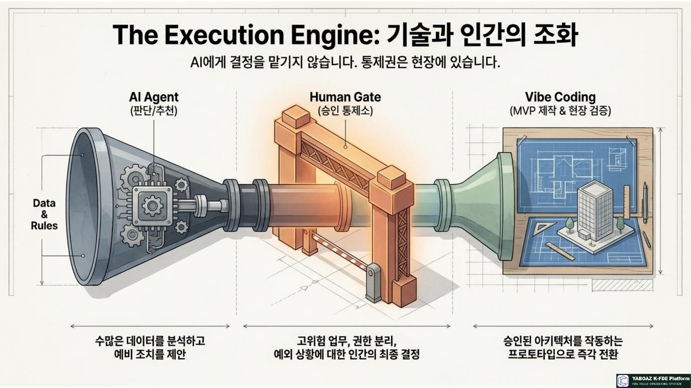
현장의 신호를 실행가능한 자산으로 참고 슬라이드 07 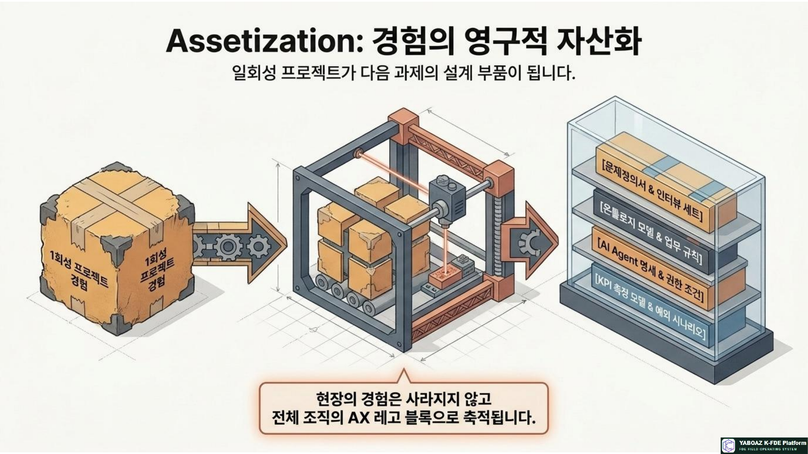
현장의 신호를 실행가능한 자산으로 참고 슬라이드 08 4. YABOAZ의 실행 엔진 AI Agent 데이터를 찾고 맥락을 파악하며 판단을 추천하고 도구를 호출하는 업무 전문 실행 단위입니다.
Human Gate AI 추천을 사람이 검토·수정·승인한 뒤 중요한 업무 행동으로 연결합니다.
Vibe Coding 현장을 아는 FDE가 아이디어를 빠르게 화면과 작동하는 프로토타입으로 구현합니다.
MVP 문제 하나, 사용자 한 그룹, 데이터 한 종류, 업무 흐름 하나, KPI 하나로 작게 검증합니다.
Human Gate가 필요한 영역 의료, 안전, 금융, 인사, 법무, 재난, 공공행정, 대외 공지, 개인정보 처리처럼 위험이 큰 업무에서는 인간 승인과 책임체계를 기본값으로 둡니다.
AI 추천 → 인간 검토 → 승인 또는 수정 → 행동 실행 → 결과 기록
바이브코딩의 목적 FDE가 모든 소프트웨어를 혼자 개발하는 것이 아니라, 현장을 가장 잘 아는 사람이 해결책의 작동 가능성을 빠르게 보여주고 사용자와 함께 검증하는 것입니다.
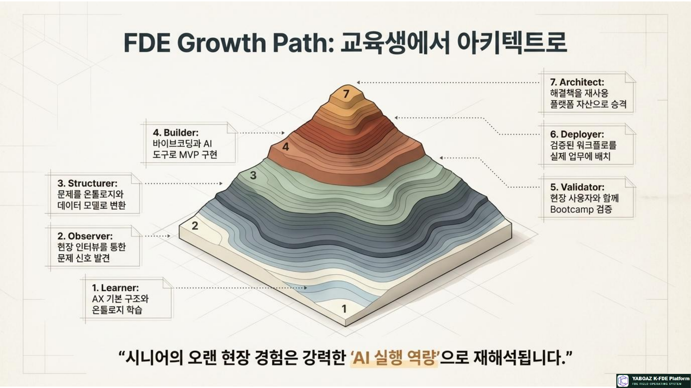
현장의 신호를 실행가능한 자산으로 참고 슬라이드 09 5. YABOAZ의 자산화 구조 일반 프로젝트가 종료 후 보고서를 남긴다면, YABOAZ는 문제·영향 대상·사용 데이터·온톨로지·Agent·워크플로·KPI·예외·재사용 조건을 남깁니다.
자산명 → 해결 문제 → 적용 도메인 → 필요 데이터 → 온톨로지 모델 → AI 판단 규칙 → Agent 사양 → 워크플로 → KPI → 사용자 매뉴얼 → 적용 조건 → 제한 사항
운영 효과 신규 프로젝트 분석시간과 개발기간, 교육기간, 시행착오를 줄입니다.
품질 효과 검증된 구조를 재사용해 결과의 일관성과 고객 제안력을 높입니다.
확장 효과 산업별 템플릿과 도메인 자산을 쌓아 수평 확장을 가능하게 합니다.
사업 효과 SaaS 기능, 교육, 컨설팅, 플랫폼 수익으로 연결할 수 있습니다.
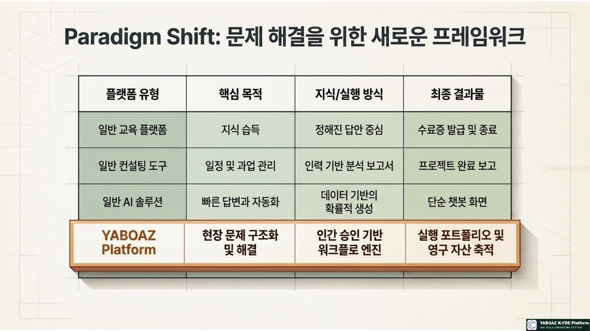
현장의 신호를 실행가능한 자산으로 참고 슬라이드 10 6. FDE 성장 경로 1 · Learner AI·AX 기초, 현장 관찰, 문제 정의, 온톨로지 7요소를 배웁니다.
2 · Observer 현장을 방문하고 인터뷰와 업무 동선을 통해 문제를 발견합니다.
3 · Structurer 객체·속성·관계·상태·이벤트·규칙·행동을 모델링합니다.
4 · Builder Agent, 프롬프트, 워크플로, 데이터 연결과 MVP를 만듭니다.
5 · Validator Bootcamp와 KPI로 사용성, 정확도, 시간, 오류 개선을 검증합니다.
6 · Deployer 운영 환경, 권한, 교육, 변화관리, 장애 대응체계를 구축합니다.
7 · Architect 공통 온톨로지, 산업별 자산, 플랫폼 아키텍처와 AX 로드맵을 설계합니다.
배운다 → 관찰한다 → 구조화한다 → 만든다 → 검증한다 → 배포한다 → 설계한다
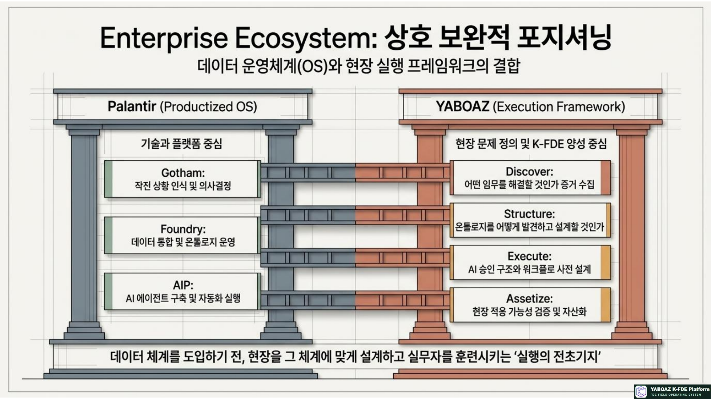
현장의 신호를 실행가능한 자산으로 참고 슬라이드 11 7. YABOAZ와 팔란티어의 관계 구분 팔란티어 YABOAZ 정체성 글로벌 기술 스택과 제품화된 운영체계 한국형 FDE 실행 프레임워크와 자산화 체계 핵심 구조 Gotham · Foundry · Apollo · AIP Discover · Structure · Execute · Assetize 핵심 가치 데이터·온톨로지·AI·배포 통합 현장 적용·검증·교육·재사용 포지셔닝 글로벌 기술 플랫폼 기술을 현장 성과로 전환하는 실행 계층
YABOAZ는 팔란티어의 직접적인 복제품이나 대체재보다, 글로벌 기술 플랫폼을 한국 현장 성과로 전환하는 실행 계층으로 설명하는 것이 적절합니다. 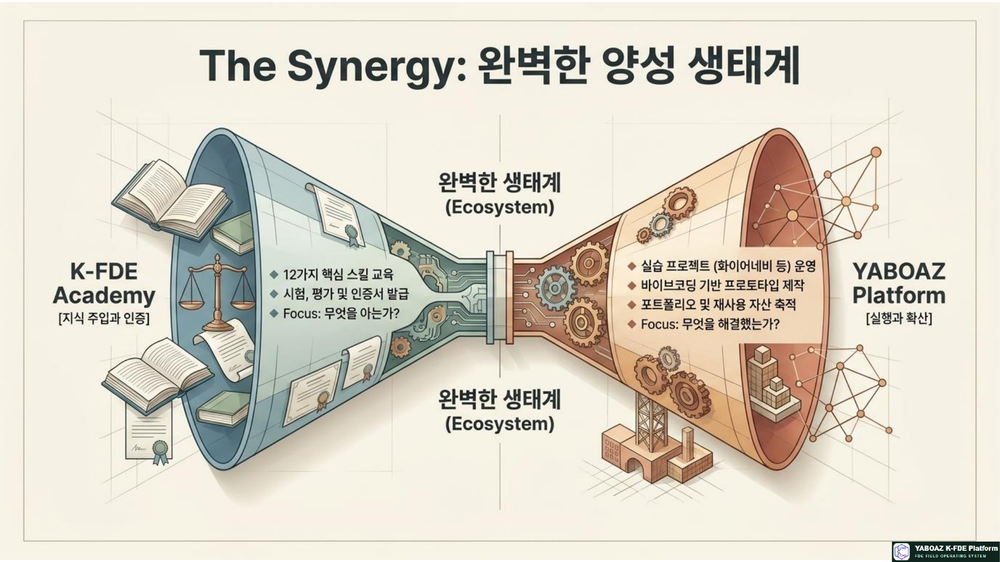
현장의 신호를 실행가능한 자산으로 참고 슬라이드 12 8. YABOAZ와 K-FDE Academy의 연결 K-FDE Academy는 사람을 양성하고, YABOAZ는 그 사람이 실제로 활동할 수 있는 환경을 제공합니다.
Academy 12가지 핵심 스킬, 온톨로지, Agent, 바이브코딩, 문제 해결, 사례 프로젝트, Bootcamp, 자격과 현장 배치를 교육합니다.
YABOAZ 현장 자료, 인터뷰, 온톨로지, Agent, 워크플로, MVP, KPI, 결과 자산화와 포트폴리오를 관리합니다.
K-FDE Academy → 배우기 → 실습하기 → YABOAZ에서 MVP 만들기 → Bootcamp 검증 → KPI 측정 → 플랫폼 자산 등록 → 실제 프로젝트 참여
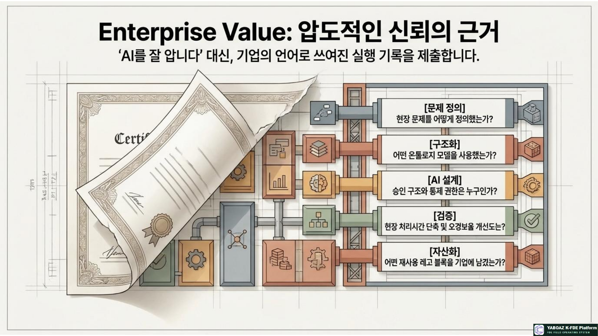
현장의 신호를 실행가능한 자산으로 참고 슬라이드 13 9. YABOAZ와 기업의 관계 기업은 YABOAZ를 통해 AI 과제를 선정하고, 현장 문제를 구조화하며, PoC를 운영으로 전환하고, 성공 사례를 전사 자산으로 확산할 수 있습니다.
현장 문제 발굴 → 우선순위 선정 → 데이터·업무 분석 → 온톨로지 설계 → AI 시나리오 → MVP → Bootcamp → KPI → 운영 전환 → 자산 등록
기업이 확보하는 것 실행 가능한 AI 과제, 검증된 자동화, 내부 FDE 인력, 재사용 온톨로지와 Agent
지속 가능한 변화 승인과 책임체계, 운영 로그, 개선 루프, 자산 라이브러리와 확장 기반
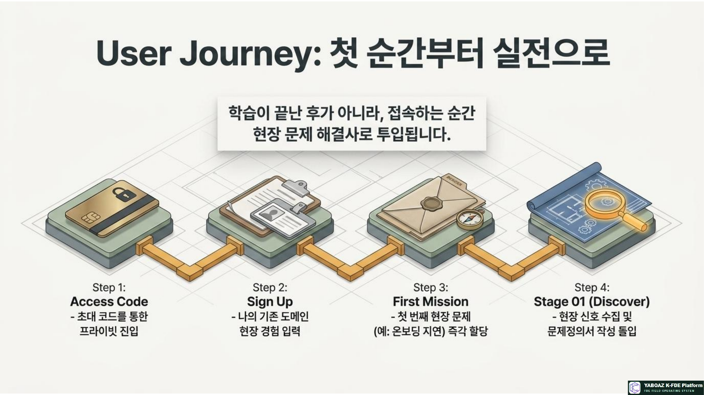
현장의 신호를 실행가능한 자산으로 참고 슬라이드 14 10. YABOAZ의 최종 가치 현장 가치 업무시간·반복업무·오류를 줄이고 의사결정 속도를 높입니다.
조직 가치 암묵지를 표준화하고 담당자 의존도를 낮춥니다.
기술 가치 온톨로지, Agent, 워크플로, API, 승인과 감사체계를 연결합니다.
사업 가치 한 번의 문제 해결을 반복 가능한 사업 자산으로 전환합니다.
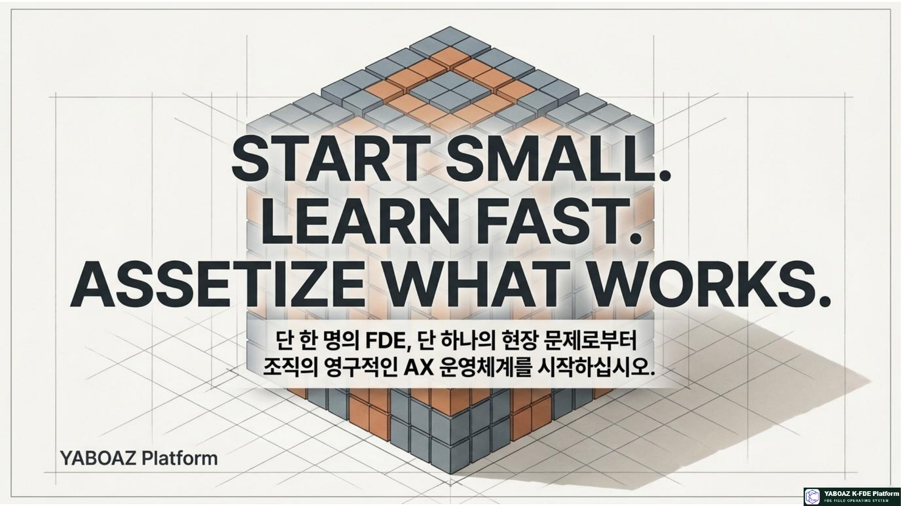
현장의 신호를 실행가능한 자산으로 참고 슬라이드 15 11. 최종 실행 모델 현장의 신호 → Discover → 문제와 증거 → Structure → 온톨로지와 업무 구조 → Execute → AI Agent + Human Gate + Vibe Coding + MVP → KPI와 Bootcamp 검증 → Assetize → 질문·온톨로지·Agent·워크플로·KPI 자산 → 다음 프로젝트 확장
YABOAZ의 운영 원리 발견하고, 구조화하고, 실행하고, 자산화한다.
YABOAZ는 현장의 신호를 실행 가능한 구조로 바꾸고, 실행 결과를 반복 가능한 조직 자산으로 축적하는 K-FDE Field Operating System입니다.
12. 최종 메시지 FDE는 현장의 신호를 읽고, YABOAZ는 그 신호를 구조화합니다. AI Agent는 판단과 추천을 수행하고, 사람은 중요한 결정을 검토하고 승인합니다. MVP는 작은 실행을 가능하게 하고, Bootcamp는 실제 가치를 검증하며, KPI는 성과를 증명합니다.
현장의 신호를, 실행 가능한 자산으로. 작게 시작하고, 빠르게 배우고, 검증된 것을 자산화하십시오.